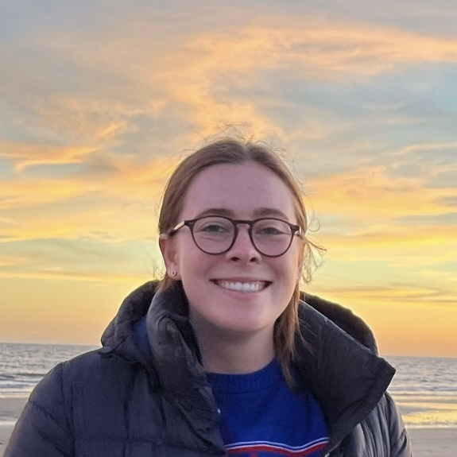
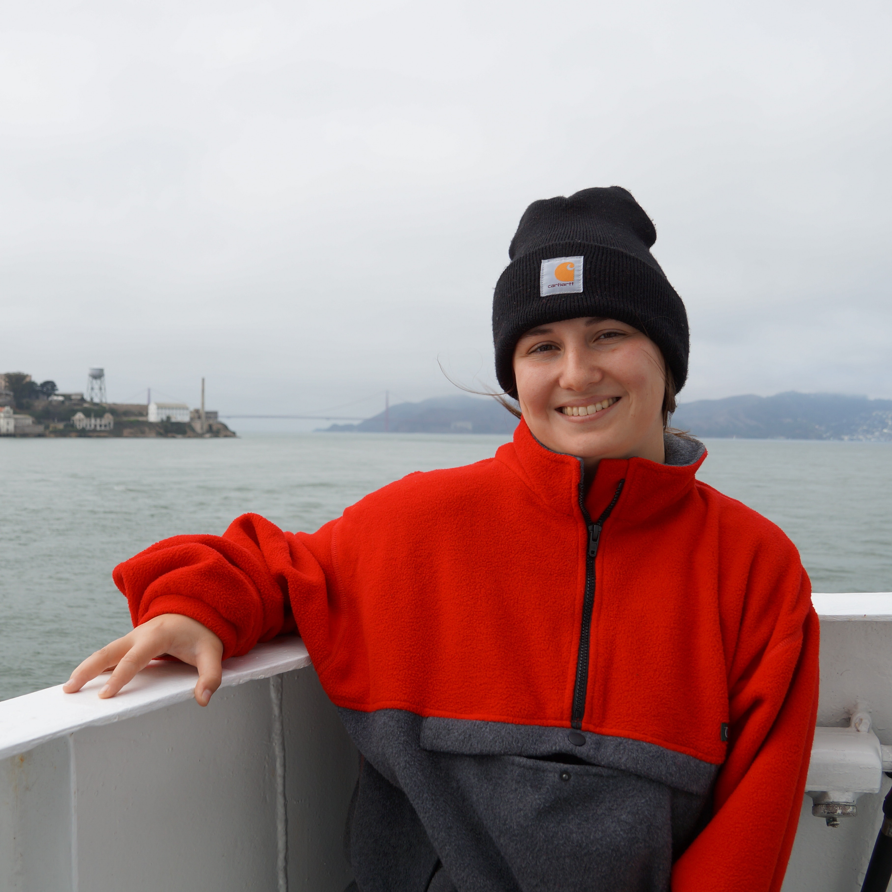
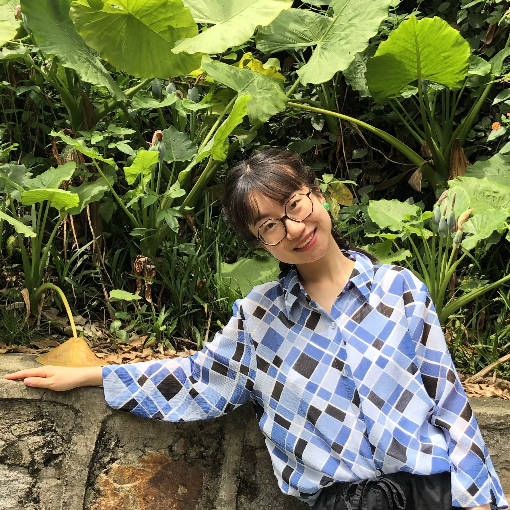

{kind=link}
Ipsum Dolor
Scientists and local residents of Kotzebue, Alaska pose with the uncrewed aerial vehicle (UAV) used in a joint effort to study changes in Arctic sea ice
Air-Sea Interaction & Wave-Related Processes
We have mounted a suite of instruments and imaging systems on the Air-Sea Interaction Tower (ASIT), a platform 7 kilometers offshore of Martha's Vineyard. Data from these devices is continuously transmitted across Martha's Vineyard Sound, allowing for around-the-clock monitoring of wind, wave, and current conditions. This effort embodies the Lamont-Doherty Earth Observatory's Real-Time Earth strategic initiative.
Antarctic Oceanography
In 2017 aboard the R/V Araon, we deployed a mooring equipped with instruments to measure temperature, salinity, wave characteristics, ice thickness, and vertical current velocities in Terra Nova Bay, Ross Sea in order to understand the formation and vertical mixing of High Salinity Shelf Water (HSSW), an important constituent of the Antarctic Bottom Water that drives global ocean circulation.
Ikaaġvik Sikukun
Bridging the scientific and indigenous communities: Sea Ice Change in Arctic Alaska.
The Sea Surface Microlayer Universe
A multi-disciplinary and multi-institutional effort to increase our understanding of the significance and role of the air-sea interface (sea surface microlayer, SML) as the boundary layer controlling atmosphere-ocean interactions. The first phase of this project took place in 2016 on the R/V Falkor in the Timor Sea. The second phase is ongoing. The second phase took place in 2019 in Fiji.
L.Hogan, C.J. Zappa, A. Cifuentes-Lorenzen, J. B. Edson, J. O’Donnell, D. S. Ullman (2025), Observations of Breaking Wave Dissipation and Their Relationship to Atmosphere-Ocean Energy Transfer, Journal of Geophysical Research: Oceans, e2024JC022130, doi: 10.1029/2024JC022130.
Witte, C. R., Zappa, C. J. (2025), The Response of Large Diurnal Warm Layers to Short-Term Variability in Solar and Wind Forcing: Observations and Physical Modeling, American Meteorological Society: Journal of Physical Oceanography, 55, 771–786, doi: 10.1175/JPO-D-24-0106.1.
Laxague, N. J. M., Zappa, C. J., Soumya, S., Wurl, O. (2024), The suppression of ocean waves by biogenic slicks, Nature Communications, 21:20240385, doi: 10.1098/rsif.2024.0385.
Miller, U. K., Zappa, C. J., Gordon, A. L., Yoon, S., Stevens, C., Lee, W. S. (2024), High Salinity Shelf Water production rates in Terra Nova Bay, Ross Sea from high-resolution salinity observations, Nature Communications, (2024)15:373, doi: 10.1038/s41467-023-43880-1.
Witte, C. R., C. J. Zappa, and J. B. Edson (2023), The Response of Ocean Skin Temperature to Rain: Observations and Implications for Parameterization of Rain-Induced Fluxes, Journal of Geophysical Research: Oceans, 128(1), e2022JC019146, doi:10.1029/2022JC019146.
Miller, U. K., C. J. Zappa, S. F. Zippel, J. T. Farrar, and R. A. Weller (2023), Scaling of Moored Surface Ocean Turbulence Measurements in the Southeast Pacific Ocean, Journal of Geophysical Research: Oceans, 128(1), e2022JC018901, doi:10.1029/2022JC018901.
Zippel, S. F., J. T. Farrar, C. J. Zappa, and A. J. Plueddemann (2022), Parsing the Kinetic Energy Budget of the Ocean Surface Mixed Layer, Geophysical Research Letters, 49(2), e2021GL095920, doi:10.1029/2021GL095920.
Witte, C. R., C. J. Zappa, A. R. Mahoney, J. Goodwin, C. Harris, R. E. Schaeffer, R. Schaeffer Sr, S. Betcher, D. D. W. Hauser, N. J. M. Laxague, J. M. Lindsay, A. Subramaniam, K. E. Turner, and A. Whiting (2021), The Winter Heat Budget of Sea Ice in Kotzebue Sound: Residual Ocean Heat and the Seasonal Roles of River Outflow, Journal of Geophysical Research: Oceans, 126(9), e2020JC016784, doi:10.1029/2020JC016784.
Laxague, N. J. M., and C. J. Zappa (2020), The impact of rain on ocean surface waves and currents, Geophysical Research Letters, 47(7), e2020GL087287, doi:10.1029/2020GL087287.
Zappa, C. J., S. M. Brown, N. J. M. Laxague, T. Dhakal, R. A. Harris, A. M. Farber, and A. Subramaniam (2020), Using ship-deployed high-endurance unmanned aerial vehicles for the study of ocean surface and atmospheric boundary layer processes, Frontiers in Marine Science, 6(777), doi:10.3389/fmars.2019.00777.
Laxague, N. J. M., and C. J. Zappa (2020), Observations of mean and wave orbital flows in the ocean’s upper centimetres, Journal of Fluid Mechanics, 887, A10, doi:10.1017/jfm.2019.1019.
Brumer, S. E., C. J. Zappa, B. W. Blomquist, C. W. Fairall, A. Cifuentes-Lorenzen, J. B. Edson, I. M. Brooks, and B. J. Huebert (2017), Wave-related Reynolds number parameterizations of CO2 and DMS transfer velocities, Geophysical Research Letters, 44(19), 9865-9875, doi:10.1002/2017GL074979.
PI, LDEO Research Professor

Graduate Student

Graduate Student

Graduate Student
Graduate Student

Graduate Research Assistant

Nathan Laxague,
Assistant Professor at the University of New Hampshire, Department of Mechanical Engineering
Website
Tae Siek Rhee,
Senior Research Scientist, Korean Ocean Polar Research Institute
Michael L. Banner,
Senior Research Scientist, University of New South Wales Sydney
Manuel Jenkin Jerome, M.S. Electrical Engineering, 2023
Una Kim Miller, Department of Earth and Environmental Sciences (DEES), Ph.D. 2023
Nathan Laxague, Postdoctoral Researcher, 2017-2020
Scott Brown, Staff Associate Engineer, 2009-2020
Suki CK Wong, M.A. Earth and Environmental Sciences, 2020
Sophia Brumer, DEES, Ph.D. 2017
Deborah LeBel, Staff Associate Researcher, 2007-2015
Daniel Kiefhaber, Visiting Fulbright Scholar, University of Heidelberg, 2011-2012
Phil Orton, DEES, Ph.D. 2010
Scientists and local residents of Kotzebue, Alaska pose with the uncrewed aerial vehicle (UAV) used in a joint effort to study changes in Arctic sea ice
PhD student Carson Witte carries scientific equipment back to the shipboard lab following the successful recovery of our mooring in Terra Nova Bay, Antarctica.
A Uncrewed Aerial Vehicle (UAV) launches from the helicopter deck of the R/V Falkor during our 2016 expedition to study the sea surface microlayer.
Prof. Zappa presented the group’s work on High Salinity Shelf Water production in Terra Nova Bay at the Ross Sea Conference 2023 in Naples.

The Floating Instrument Platform (FLIP) during the US Navy Research’s MRI Radiance in a Dynamic Ocean (RaDyO) field program in 2008/9. The research team studied the impact of ocean waves and turbulent mixing on optical variability in the near-surface ocean from the FLIP.

DEES PhD student Jerry Junzhe Liu demonstrated the thermohaline circulation during the 2023 Lamont Open House. He created the "equator" with lamp heat and the "pole" using ice, and added dyes to reveal the water's movements: warm buoyant water travels to the "pole" from the "equator" on the surface, while cold dense water sinks and moves from the "pole" to the "equator" at the bottom.

Prof. Zappa and fellow researchers at the 2008 Southern Ocean Gas Exchange Experiment, which took place in the Atlantic sector south of the Polar Front. The OASIS team investigated the momentum and carbon exchange due to ocean waves at high wind speed.
Manta Uncrewed Aerial Vehicle (UAV) against the snowy mountains of the Svalbard archipelago of Norway.

Lindsay Hogan, a second-year graduate student in Department of Earth and Environmental Science (DEES), presented research on the detection of ensonified capillary-gravity waves using polarimetric imaging at the 25th Ocean Optics Conference in 2022.

Aerial views of sea ice with melt ponds in Kotzebue Sound, Alaska (May 2019). Photos were taken by an uncrewed aerial vehicle (UAV)—a modern sensing platform technology optimized to capture high-resolution data in remote locations.
Prof. Zappa deploying a mooring at the STRATUS station off the coast of Arica, Chile during the VOCALS (VAMOS Ocean-Cloud-Atmosphere-Land Study) field experiment in 2008.
Dr. Una Miller on the icebreaker RV Araon in Terra Nova Bay. Una is a DEES PhD graduate and a former Zappa Lab member. She is now a Postdoc at University of Rhode Island with Jaime Palter.
{kind=link}
{kind=link}
{kind=link}
{kind=link}
{kind=link}
{kind=link}